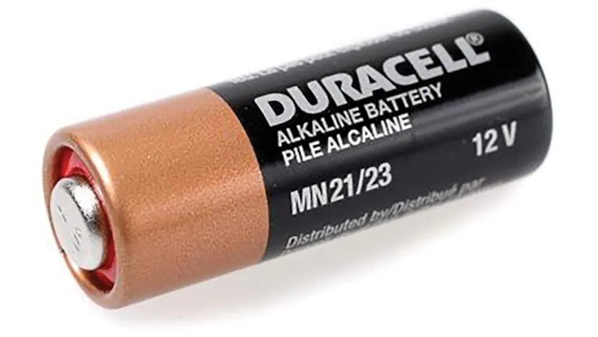
Power
Battery
Long line is positive. Short line is negative.
Section 1.0 · Morning
Real circuits look like spaghetti. Diagrams turn that mess into a language you can read, share, and build from. Today you will draw, compare, then assemble.
1.1 Why diagrams?
A real gadget has overlapping wires, hidden tracks, and parts facing every direction. A circuit diagram keeps only the useful facts: what the parts are, and how they connect.
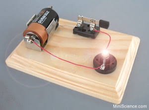
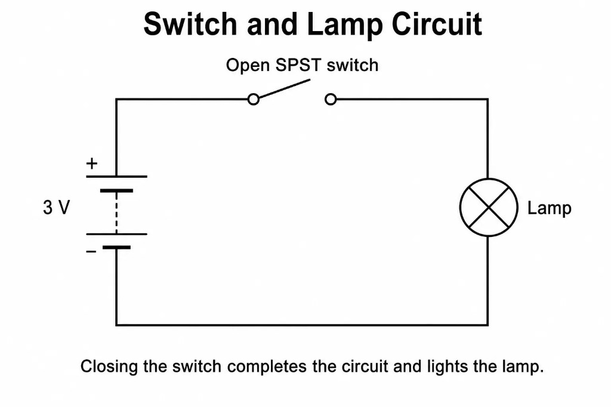
Same circuit, two languages. The photo shows a Duracell, a knife switch, and a glowing lamp. The diagram keeps only the useful facts: battery, switch, lamp, and how the wires join.
1.2 Circuit symbols
Learn these few symbols and you can read almost every beginner diagram we will use today.

Power
Long line is positive. Short line is negative.
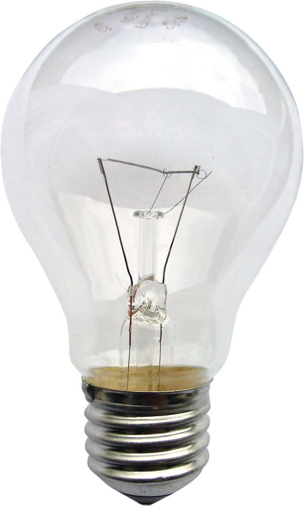
Output
Lights up. Circle with a cross is the lamp symbol.
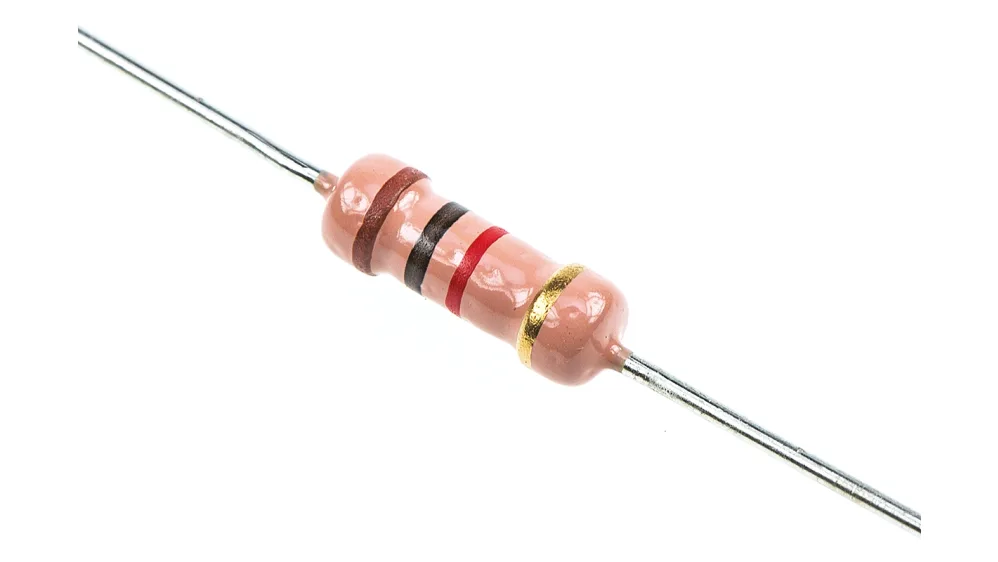
Limit
Slows current so an LED does not burn out.
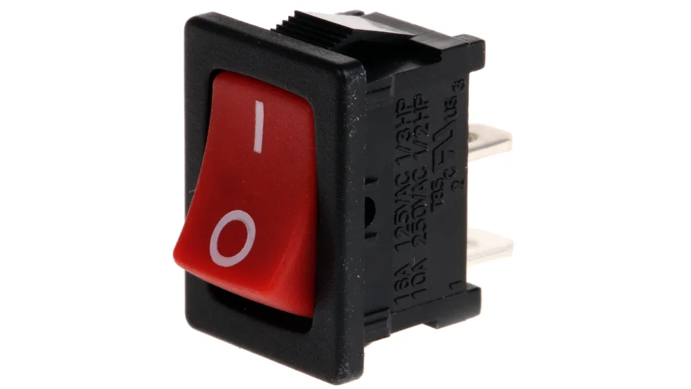
Control
Open = off. Closed = the path continues.
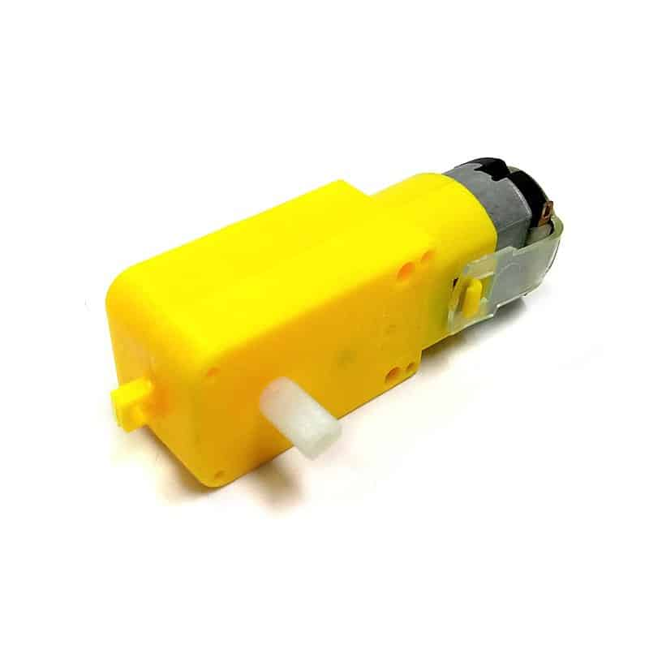
Mover
Turns electrical energy into spin. Your wheels.
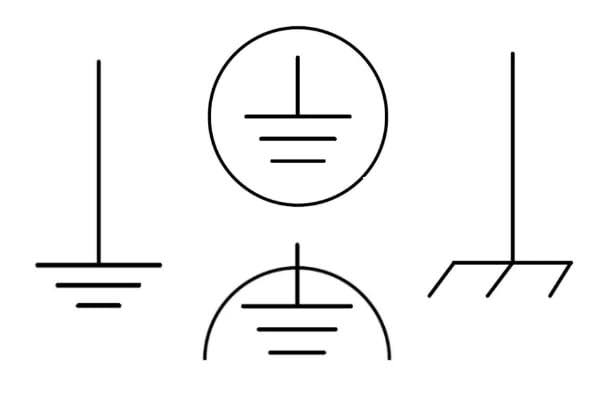
Return
The common return point. Often the battery minus.
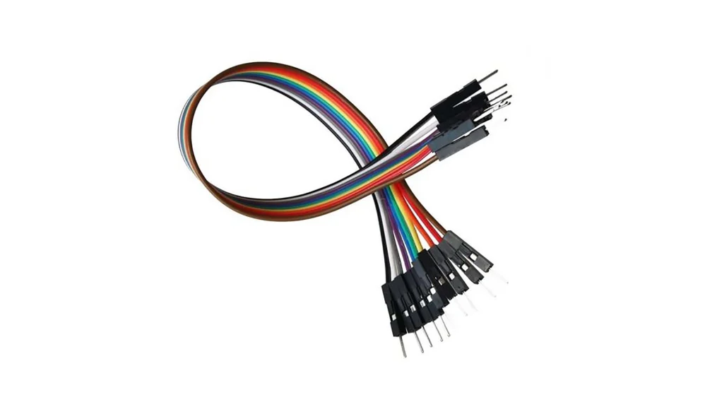
Path
A dot means wires join. Crossing with no dot usually means they do not.
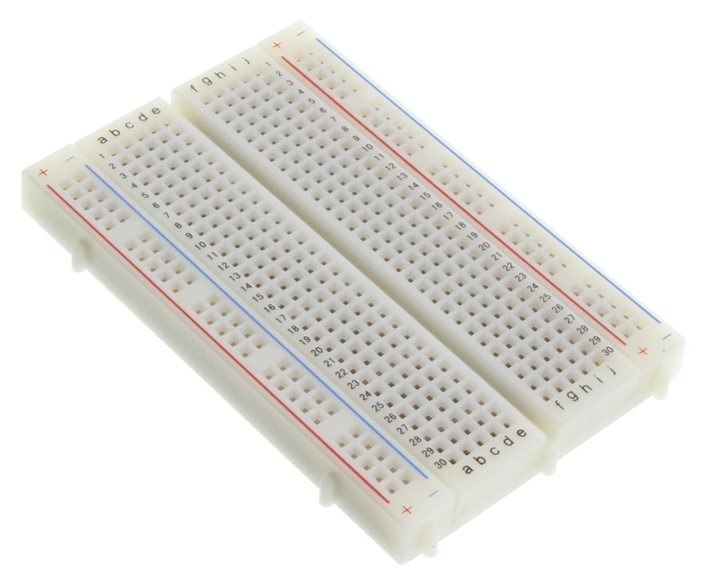
Tool
Not a symbol — a practice table for plugging parts with no solder.
1.3 Voltage and current
Current is how much electricity is moving. Voltage is the push that makes it move. No push, no flow — just like a water slide with no tower.
Voltage
Like the height of a water tank. A battery only makes that push across a lamp if it is actually connected to both sides of the lamp.
Current
Like how much water is rushing through the pipe. Current can only exist if voltage is pushing. Unplug the battery and the lamp goes dark.
The battery sits across the lamp, so there is a push. The push makes current flow, and the lamp lights up.
In series, both lamps share the same current — the same flow. One road only. If one lamp is removed, the whole loop breaks and both lights go out.
1.4 Series and parallel
Series means parts line up on a single path. Parallel means parts sit on separate paths that share the same two ends.
1.5 How to use a breadboard
A breadboard lets you test a circuit without soldering. The long red and blue edges are power rails — one strip for +, one for −. In the middle, metal clips join holes in the same column. The gap splits each column in two.
Tap a circuit hole to see a column. Tap + or − to see a whole power rail.
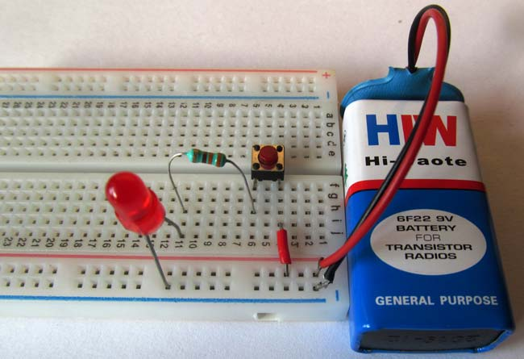
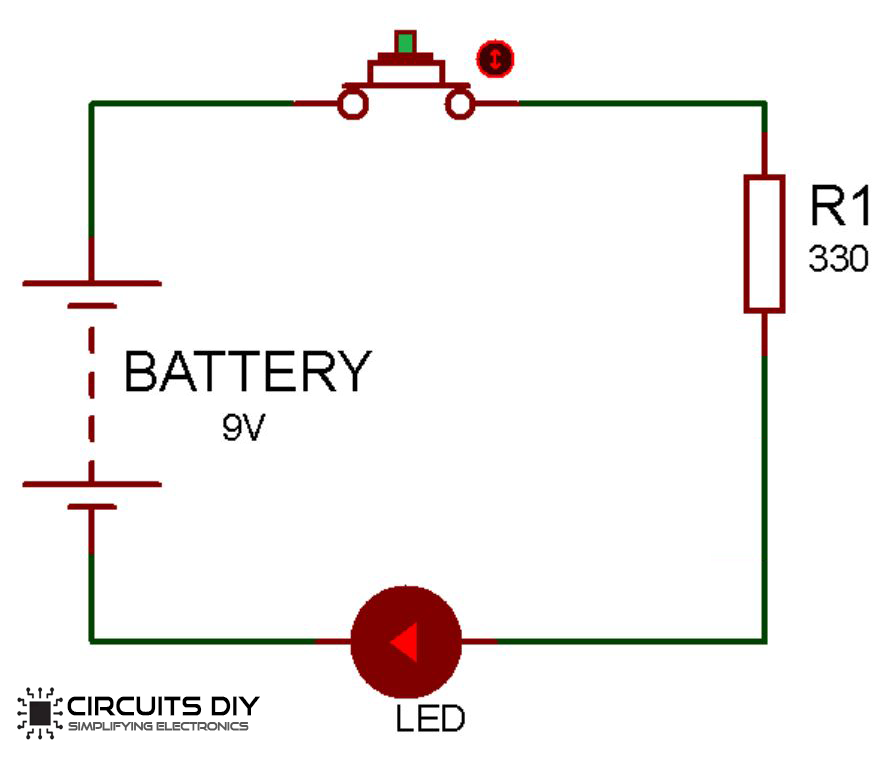
1.6 Quiz + build
Facilitators will show a simple series circuit and a simple parallel circuit with LEDs. First draw the matching diagram. Then assemble it on the breadboard at your desk.
Draw the diagram, then plug battery, resistor, and LEDs in one path.
Draw the diagram, then give each LED its own path back to the battery.
1.7 PCB
Once a circuit is trusted, we print it onto a board. Copper tracks replace jumper wires. That board is a Printed Circuit Board — and you will be given one today.
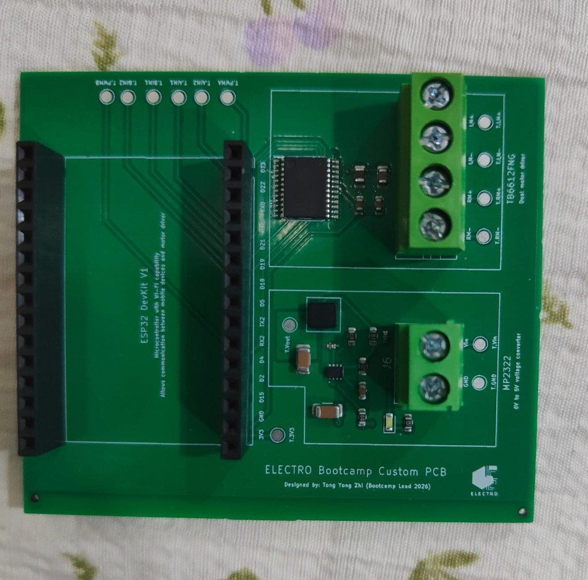
Design the tracks on a computer, print the copper pattern, etch away extra copper, drill holes, then solder parts on. Factory boards do this at scale.
Neater than breadboards. Harder to unplug by accident. Repeatable — every student car can use the same trusted layout.
You do not need to manufacture one. A PCB is provided. Later you will treat it as the “clean” version of the H-bridge you first prove on a breadboard.